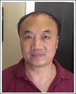

50 years of abundant clinical experience in TCM and practiced in China, Kenya, Africa, and US
Specialize in refractory and sophisticated disorders. Identify root causes of bio-medically diagnosed conditions, including but not limited to allergy, coronary arterial disease, immune deficiency or hyperactive disorders, cancer, aplastic anemia, impotence, depression, and CFS
Head scientist of Rongzhong Pharmaceutics and Sciences, Inc. of China
Top 30 candidate listed as "Twelfth Five-Year Top Science Projects" of China
Certified by both California Medical Board and NCCAOM
Among the first alumni of China Academy of Traditional Chinese Medicine
(currently China Academy of Chinese Medical Sciences),
the highest national level institute in traditional Chinese medicine (TCM)
Editor and author of numerous books and articles in Chinese medicine
Azure Duan
L.Ac., Dipl.O.M. Ph.D. in Medicine (China) Tai Chi Instructor Medical Translator
A second generation inherited rich knowledge in Chinese medicine from her father at very young age, and continues to carry on the family practice
Specialize in concluding TCM patterns and root causes to design herbal formulas for stress, anxiety, mood swings, sleep disorder, fatigue, women's health, junior’s wellness and holistic wellness management
Expert in Gua Sha (scraping) and Ba Guan (cupping) for weight management, unhealthy energy removal, healthy energy tuning and facial rejuvenation
Instructor of mind-body cultivation Tai Ji Quan
Winner in Chinese Medicine Development of the 2014 Double Hundreds Program of Xia Men, Fujian, China
Earned her Ph. D. from Chengdu University of Traditional Chinese Medicine, one of China's pioneer institutes in Chinese medicine
Sole translator of Introduction to Tui Na, available at Amazon.com since Dec. 2013. Editor and translator for the People's Medical Publishing House, national medical publisher of China

Simon Wang
L. M. T. (GA) Instructor
Specialize in traditional Chinese Tui Na (meridian style therapeutic massage)
Alleviate musculoskeletal pain, stiffness, strain and sprain
Increase range of motion due to pain and stiffness
Improve sleep quality
Instructor in Athens Institute for Massage
Formerly trained in Liaoning College of Traditional Chinese Medicine